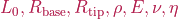

GVSBody¶
This abstract class represents a slender soft body modeled under the Geometric Variable Strain (GVS) approach of [2].
The class implements all the methods required by a Body. Concrete subclasses must define a strain basis such that
where is the strain, being  its stress-free value, the vector of configuration variables and the curvilinear abscissa, with
its stress-free value, the vector of configuration variables and the curvilinear abscissa, with  the body rest length.
the body rest length.
See PCC2D or PCC3D for how the strain basis can be implemented.
- class GVSBody¶
Bases:
BodyAbstract class modeling a 1D continuum under the Geometric Variable Strain (GVS) approach. The internal interaction forces are modeled using a linear visco-elastic law.
- Constructor Summary
- GVSBody(n, Parameters)¶
Construct a GVS body.
- Parameters:
n (
double) – Number of DoF of the bodyParameters (
[double], [sym]) – Parameters of the body, specified as  and
- Property Summary
- Parameters¶
Vector collecting the parameters of the GVS Body as , where and
 denote the body rest length, the base and tip radius, is the mass density, the Young modulus,
the Poisson ratio,
denote the body rest length, the base and tip radius, is the mass density, the Young modulus,
the Poisson ratio,  the material damping coefficient, and represents the number of Gaussian points used for the computation of the kinematics and the integrals.
the material damping coefficient, and represents the number of Gaussian points used for the computation of the kinematics and the integrals.
- Method Summary
- Update(q, dq, ddq, options)¶
Arguments definition
- xi(q, s)¶
Output preallocation